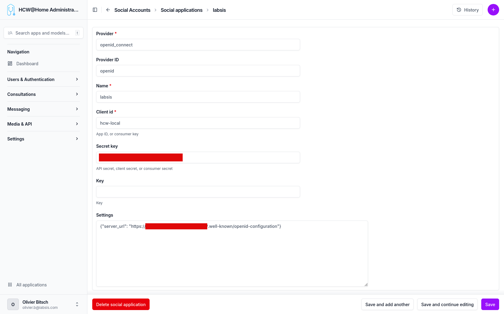

Single Sign-On (SSO)
HCW@Home delegates authentication to an external OpenID Connect identity provider (Keycloak, Azure AD / Entra ID, Google, Okta, …). When a Social Application is configured, a "Sign in with …" button appears on the practitioner login page. Accounts are created on first login; roles (staff, practitioner) can be assigned afterwards in the admin.

Menu: Users & Authentication > SSO Providers
Only one active openid_connect application is expected per tenant. The login page picks it up automatically via /api/config/.
Adding a Social Application
From the sidebar, go to Users & Authentication > SSO Providers > Add and fill the form.
| Field | Value | Notes |
|---|---|---|
| Provider | openid_connect |
Must be exactly this string. Other provider types are not used by HCW@Home. |
| Provider ID | openid |
Free internal identifier used by django-allauth. openid works for all cases. |
| Name | e.g. Keycloak, Azure AD, your tenant name |
Displayed on the "Sign in with …" button. |
| Client ID | e.g. hcw-local |
Client ID from the IdP (Keycloak client name, Azure app ID, etc.). |
| Secret key | the client secret | Required unless the IdP is configured as a public client. |
| Key | (leave blank) | Unused for openid_connect. |
| Settings | JSON dict — see below | Non-obvious. This is where the OIDC discovery URL is declared. |
| Sites | pick the site matching the tenant domain | Django Sites entry — create one first if none matches. |
The Settings field
The openid_connect provider reads the IdP's metadata from a JSON dict stored in the Settings field. The only required key is server_url, which must point to the IdP's OpenID Connect discovery document (.well-known/openid-configuration):
Valid JSON
Use double quotes, no trailing comma. A malformed Settings value breaks the login page for every practitioner of the tenant.
Examples per IdP
| Provider | server_url |
|---|---|
| Keycloak | https://auth.example.com/realms/<realm>/.well-known/openid-configuration |
| Azure AD / Entra ID | https://login.microsoftonline.com/<tenant-id>/v2.0/.well-known/openid-configuration |
https://accounts.google.com/.well-known/openid-configuration |
|
| Okta | https://<your-domain>.okta.com/.well-known/openid-configuration |
Redirect URI on the IdP side
When registering HCW@Home as a client on the identity provider, the redirect URI to allow is:
Testing the flow
- Save the Social Application.
- Open the practitioner login page in a private / incognito window.
- The "Sign in with
<Name>" button appears next to (or instead of) the password form. - Click it: you are redirected to the IdP, authenticate, and come back logged in.
- The new user shows up in Users & Authentication > Users. Assign
is_practitioner/is_staffas needed.
Forcing SSO-only login
To hide the email/password form entirely and allow only SSO for practitioners, enable the DISABLE_PASSWORD_LOGIN option in the advanced configuration.